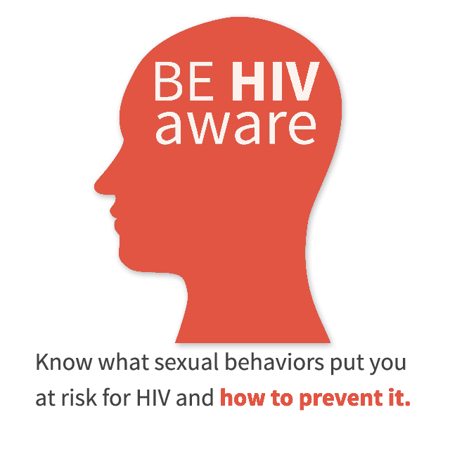
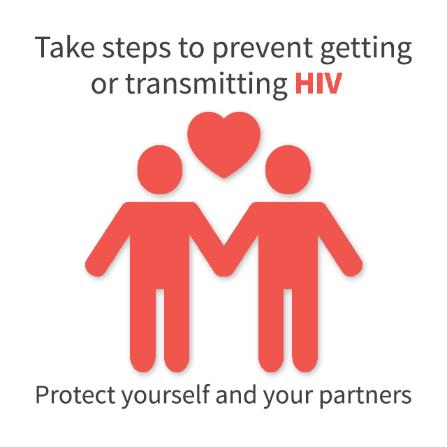
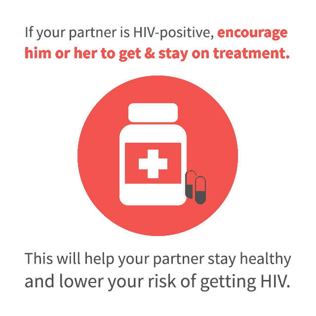

What Is The Risk Of Different Types Of Sexual Activity?
- The risk of getting HIV varies widely depending on the type of sexual activity. However, every exposure to HIV does not carry the same HIV risk, and some types of sexual activity are riskier than others.
- Not having sex is the best way to prevent getting or transmitting HIV. If you’re sexually active, you can lower your risk for HIV by choosing lower risk sexual activities, taking medicines to prevent or treat HIV, and using condoms correctly and consistently.
ANAL SEX
- Anal sex is the riskiest type of sex for getting or transmitting HIV.
- Receptive anal sex (“bottoming”) is much riskier for getting HIV than insertive anal sex (“topping”), but it’s possible for either partner to get HIV.
- The receptive partner (bottom) is at very high risk of getting HIV because the lining of the rectum is thin and may allow HIV to enter the body during anal sex.
- The insertive partner (top) also at risk because HIV can enter through the opening at the tip of the penis (or urethra); the foreskin if the penis isn’t circumcised; or through small cuts or open sores anywhere on the penis. There is evidence that circumcision may decrease the risk of the insertive partner getting HIV during anal sex. There is no evidence that circumcision benefits the receptive partner.
- HIV can found in the blood, semen (cum), pre-seminal fluid (pre-cum), or rectal fluid of a person with HIV, which means that there’s a risk for either partner to get HIV even if the insertive partner withdraws (pulls out) before ejaculating. (Withdrawal before ejaculating may, in theory, reduce the risk of getting HIV for the receptive partner, but it does not change the risk of getting HIV for the insertive partner.)
- The HIV-negative partner (either insertive or receptive) is more likely to get HIV from anal sex if the HIV-positive partner is not on HIV treatment (antiretroviral therapy or ART) and virally suppressed. The HIV-negative partner is also more likely to get HIV if either partner has a sexually transmitted disease (STD).
- You can reduce your risk by choosing sexual activities that carry a lower risk for HIV than anal sex.
- You can also reduce your risk of getting or transmitting HIV through anal sex by taking medicine to prevent or treat HIV and always using a condom consistently and correctly. Even with these things, it’s safer if the HIV-positive partner is always the receptive partner (partner on the bottom).
VAGINAL SEX
- Receptive vaginal sex (penis in the vagina) is considered a high-risk behavior for women, especially for women who have vaginal sex with men more likely to be infected, such as men who inject drugs or have sex with other men.
- HIV can enter a woman’s body through the mucous membranes that line the vagina and cervix.
- Men can also get HIV from having sex with a woman who is HIV-positive. That’s because vaginal fluid and blood can carry HIV. Men can get HIV through the opening at the tip of the penis (urethra) or through small cuts or open sores on the penis. There is evidence that circumcision may decrease the risk of the man getting HIV during vaginal sex. There is no evidence that circumcision benefits women, but studies are underway.
- HIV can be found in pre-seminal fluid (pre-cum), which means there is a risk for either the man or the woman to get HIV, even if the man withdraws (pulls out) before ejaculating. Withdrawal before ejaculating may, in theory, reduce the risk of getting HIV for the woman, but it does not reduce the risk of getting HIV for the man.
- Both men and women are more likely to get HIV from vaginal sex if the HIV-positive partner is not on HIV treatment and virally suppressed. The risk of HIV infection also increases if either partner has an STD.
- You can reduce your risk by choosing sexual activities that carry a lower risk for HIV than vaginal sex.
- You can also reduce your risk of getting or transmitting HIV through vaginal sex by taking medicine to prevent or treat HIV and always using a condom consistently and correctly. (There are two types of condoms: male condoms and female condoms.)
ORAL SEX
- Oral sex involves giving or receiving oral stimulation (i.e., sucking or licking) to the penis (fellatio), the vagina (cunnilingus), or the anus (anilingus or “rimming”).
- The chance that an HIV-negative person will get HIV from oral sex with an HIV-positive partner is extremely low. It is difficult to measure the exact risk because people who have oral sex may also have anal or vaginal sex during the same encounter.
- Performing oral sex on an HIV-infected man, with ejaculation in your mouth, is the riskiest type of oral sex activity. However, the risk is still low, and much lower than anal or vaginal sex.
- Factors that may increase the risk of transmitting HIV through oral sex are oral ulcers, bleeding gums, genital sores, and the presence of other STDs.
- You can reduce your risk getting or transmitting HIV by taking medicine to prevent or treat HIV.
- You can also reduce your risk of getting HIV and other STDs through oral sex by using a barrier, such as a condoms, natural rubber latex sheet, dental dam, or cut-open nonlubricated condom between your mouth and the other person’s genitals.
TOUCHING (FINGERING)
- There is little to no risk of getting HIV from touching or fingering an HIV-positive partner.
- You can lower any risk you may have by making sure you have no cuts or sores on your fingers or hands and your HIV-positive partner does not have cuts or sores in the rectum or vagina.
- There is a chance of getting or transmitting other STDs through touching because some STDs can be transmitted through skin-to-skin contact. Use medical-grade gloves to reduce this risk.
SEX TOYS
- Using sex toys can be a safe practice, as long as you do not share your toys with your partner.
- If you do share your toy with your partner, always cover it with a new condom, and wash it carefully after each use.
No-Risk Sexual Activities?
These activities carry no risk of HIV transmission:
- Non-sexual massage
- Casual or dry kissing
- Phone sex, cyber sex, sexy talk
- Masturbation (without your partner's body fluids)
- Frottage—also known as "dry humping" or body-to-body rubbing
- You can still contract other STDs, like herpes, human papillomavirus (HPV), or pubic lice ("crabs") if you have bare skin-to-skin contact with your partner.